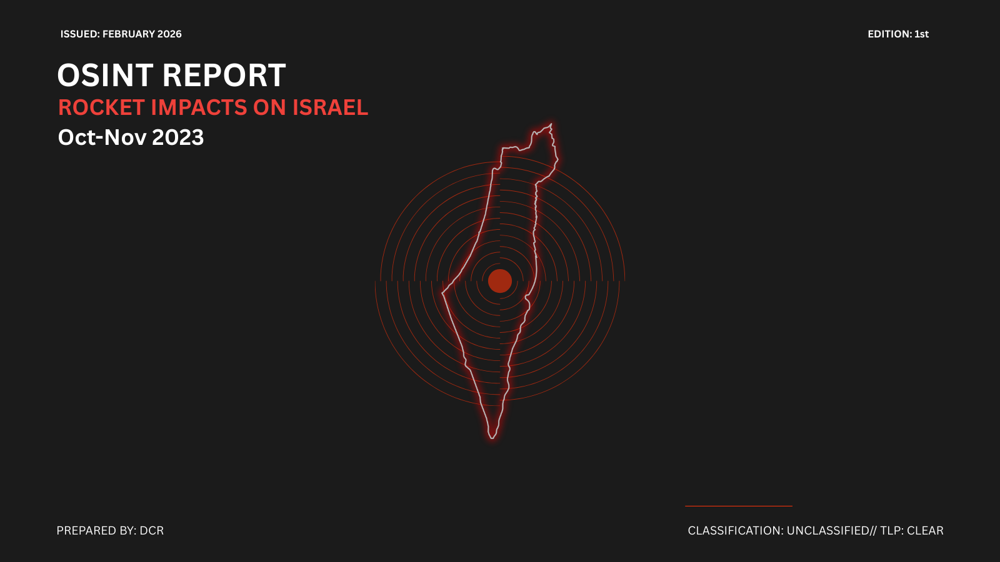
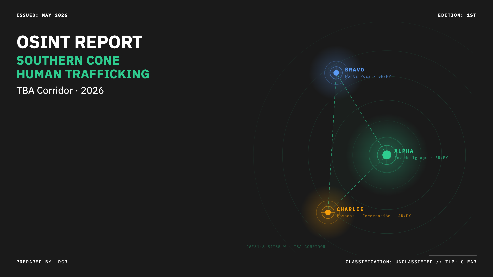

Investigation Reports

PublishedRocket Impact Verification
Geospatial and chronological analysis of two rocket impact events across Israel. Multi-feature architectural triangulation with High Confidence verification.

In ProgressSouthern Cone Human Trafficking — TBA Corridor
Geospatial and documentary assessment of trafficking infrastructure across the Tri-Border Area. Multi-temporal Sentinel-2 analysis, Lista Suja cross-reference, and three-site corridor mapping.
About This Lab
Mission
Independent open-source investigations into conflict events, human rights issues, and geopolitical developments. All findings derive exclusively from publicly available sources, ensuring full reproducibility and transparency.
Core Methods
- Geospatial triangulation & architectural matching
- Chronological cross-validation with official alert logs
- Satellite imagery analysis & change detection
- Multi-source verification frameworks
- Structured confidence assessment